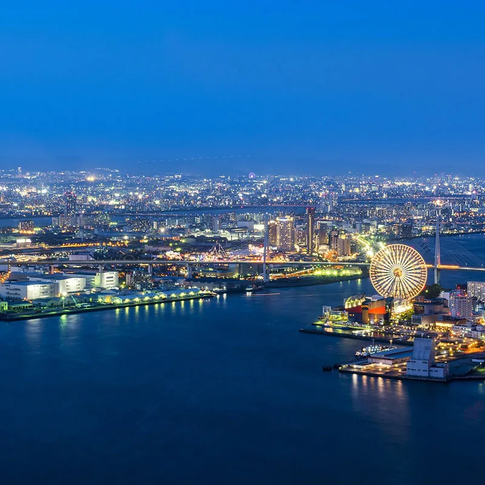

大阪城
大阪城是日本最著名的歷史古蹟之一，也是大阪的象徵。這座城堡建於16世紀，曾是豐臣秀吉的居城，在日本歷史上具有重要地位。
大阪城的必遊景點包括：天守閣：大阪城的最高點，可以從高處俯瞰大阪市區。大手門：大阪城的正門，是大阪城的入口。豊國神社：豐臣秀吉的神社，位於大阪城內。大阪城西之丸庭園：大阪城內的一個庭園，風景優美。

道頓崛
道頓堀是大阪最著名的街區，匯集了各式各樣的餐廳、商店和娛樂場所。這裡是大阪的繁華中心，也是體驗大阪活力和熱情的地方。道頓堀的必遊景點包括：固力果跑跑人：道頓堀的標誌性景點，是固力果公司經典廣告的形象。道頓堀川：流經道頓堀的河流，兩岸有許多餐廳和商店。道頓堀水上觀光船：從河上欣賞道頓堀的景色。
大阪觀光局 大阪最高觀光管理部門
大阪觀光局，致力於向全世界傳播「大阪，一個充滿活力的城市，讓所有人來到時都能盡情遊玩，享樂」。大阪觀光局的標誌以大阪的地標，大阪城作為背景，旨在成為世界上最高級別的"充滿活力"的旅遊城市，讓旅客和居民能活躍地來往。
日本觀光局 日本最高觀光管理部門
交通部觀光局（簡稱觀光局）是日本觀光事務的最高主管機關，隸屬於交通部之下。除了負責規劃、執行並管理觀光旅遊事務之外，同時肩負起向外推廣臺灣觀光的工作。觀光局也是各國家級風景特定區的主管機關。
大阪觀光局 道頓崛最高觀光管理部門
道頓堀的起源可追溯到 17 世紀早期。當時，一名當地商人將道頓堀河進行拓寬，希望可以籍此吸引更多做生意的機會。在 50 年的時間內，該地區人口快速增長，設立了六家歌舞伎劇院和五家文樂木偶戲劇院。近 400 年過去了，地區仍然是娛樂中心，吸引著無數的當地居民和遊客前往。
